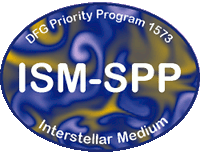
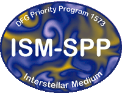

GANDALF school
We are happy to announce the 'Computational Astrophysics with GANDALF' school covering the new Hydrodynamics and N-body code GANDALF. This meeting will take place in the Bildungszentrum Kardinal-Döpfner-Haus in the beautiful Bavarian town of Freising during the week of 26th - 30th October 2015. The main aims of this school are to :
- provide classes and tutorials on how to install and run GANDALF (including dependencies)
- show the internal structure of the code and demonstrate how to best add new physics modules
- discuss the main hydrodynamical, radiative transport and other physics modules and explain the physical scenarios in which to use each available option
- demonstrate the capabilities of the Python analysis tools and how to set-up initial conditions, run simulations and prepare plots from Python scripts
- discuss general issues relating to numerical methods in Astrophysics, in particular with Hydrodynamics.
The school will take the form of a series of lectures coupled with practical sessions, presented by the code's authors Dr David Hubber and Dr Giovanni Rosotti, where participants will work through a series of exercises to gain practical experience at using all aspects of the GANDALF code. The meeting will also have some slots available for contributed talks. In the spirit of the school, we would like to have the talks relating to either projects with GANDALF, numerical methods in Astrophysics or closely related topics. If you have a science result that you are interested in presenting, please consider bringing a poster instead. There is ample space for poster contributions and all participants are guaranteed to have the opportunity to present one if they wish to.
We encourage all participants to either register online, or at least make their interest known to us by e-mail before the beginning of September (see important dates in the 'Important Info' section). If you do not know already the title or abstract of your contribution, please go ahead anyway with the registration. You can e-mail us those later on.
ISM-SPP
The ISM-SPP is a research program funded by the Deutsche Forshungsgemeinschaft/German Research Foundation (DFG) to investigate ISM physics through observational, theoretical and laboratory-based approaches. The ISM-SPP has funds to support conferences, workshops and schools that strive towards these same scientific aims. We thank the ISM-SPP for supporting this school and making it accessible financially to students both in Germany and abroad.
Lecturers/SOC
- David Hubber, USM, LMU
- Giovanni Rosotti, IOA, University of Cambridge
LOC
- Richard Booth, IoA, University of Cambridge
- Jim Dale, USM, LMU
- Matthias Gritschneder, USM, LMU
- David Hubber, USM, LMU
- Judith Ngoumou, USM, LMU
- Giovanni Rosotti, IoA, University of Cambridge
 
